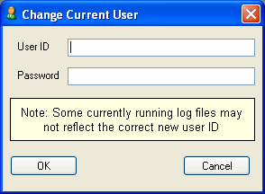
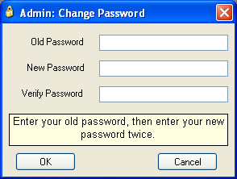

The Tools menu provides access to various utilities such as user management and macro recording.
| Customize | Reinitialize | Save Test Program as CSV | Write Test Node Execution Times |
| Start Macro Record | Stop Macro Record | User Manager | Change User |
| Change Password | Options |
See the Customizing Menus help topic.
When drivers are added, removed or modified through the Configuration pane, the drivers are not actually updated within the ActivATE™ environment until it is reinitialized. Click the "Reinitialize" menu item to update the drivers to reflect your changes. There is also a Reinitialize button on the Standard toolbar that will be highlighted in yellow to alert the user when the application detects that changes have been made that have not yet been applied.
 |
The reinitialize button is highlighted in yellow when changes have been made that will not take effect until the system is reinitialized. |
Important - All driver UIs and test programs must be closed when using this option or they may not function properly after reinitialization.
Saves the current test program sequence in table format. The file is saved in CSV format (comma-separated variables) which can be viewed in most spreadsheet applications, such as Microsoft Excel.
Example: A sample CSV test program file (as viewed in Excel) for the following simple test program.
Write Test Node Execution Times
Saves the execution times of each node from the last run of the test program as a CSV file that can be viewed in most spreadsheet applications, such as Microsoft Excel.
Example: A sample CSV Test Node Execution program file (as viewed in Excel) for the following test program.


See the Macro Record help topic.
See the Login Manager help topic. This option is only enabled when the administrator account is logged in.
Changes the current user. Enter the User ID and the Password for the new user in the fields as shown below. Click OK to proceed or Cancel to exit without changing the current user.

Changes the password for the current user. Enter the old password and the new password in the fields as shown below. Click OK to save changes or Cancel to exit without saving.

See the Options Dialog Help Topic
Astronics Test Systems
Last updated on 11/14/14 by M. Buccat